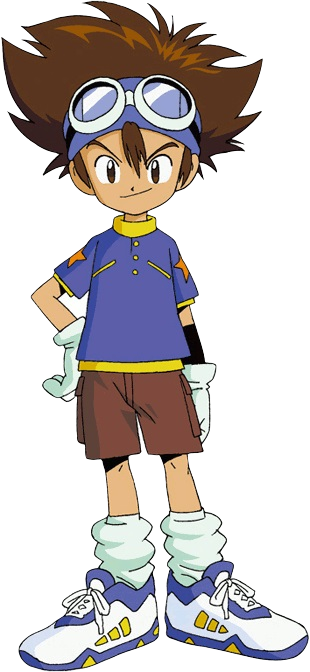
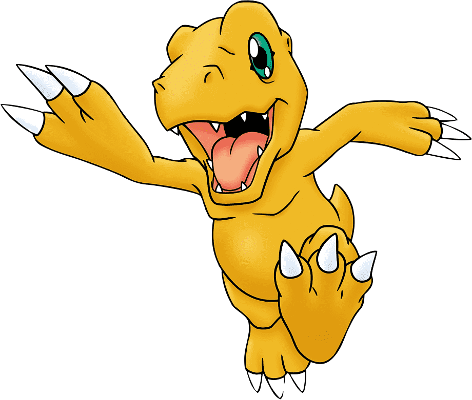

| Taichi Yagami |
|---|
|  |
| Información general |
| Web: en.bandainamcoent.eu |
| Compañero: Agumon |
| Edad: 11 años |
| Cresta: Valor |
| Nacionalidad: Japonés |
| Seiyuu (Doblador): Toshijo Fujita |
| Primera aparición: EP01(Adventure) |
| Última aparición: EP79(Xros Wars) |
Taichi Yagami (八神 太一 Yagami Taichi) es el personaje principal de la franquicia de Digimon, y es el protagonista principal del anime Digimon Adventure. También protagoniza las series de películas Digimon Adventure Tri. y Digimon Adventure: Last Evolution Kizuna, y es personaje auxiliar en Digimon Adventure 02. Además, al ser el personaje más popular en la franquicia de Digimon, Taichi es el personaje que más cameos y apariciones especiales ha hecho en otros productos de la franquicia. Su seiyuu (Actor de doblaje en japonés) es Toshiko Fujita, y es doblado por Blanca Rada en España, mientras que Gerry Meza (Adventure) y Enzo Fortuny (Adventure 02) le dieron voz en Latinoamérica.
El concepto del personaje, creado originalmente para el manga Digimon Adventure V-Tamer 01, estuvo a cargo del escritor del mismo, Iroshi Izawa, pero el diseño fue dejado a Yabuno Tenya, quien se basó ligeramente en el personaje de Kentarou Kamon para la creación de Taichi. Originalmente se tenía pensado que el personaje se llamaría Jimon Kakeru (門 カケル) y tendría 12 años en lugar de 11. Sin embargo, esto se cambió cuando el personaje fue tomado para el anime debido a que los productores deseaban usar un personaje que fuera familiar para el público, y TOEI Animation decidió que el personaje se llamaría Taichi Yagami, y sería usado como el protagonista de los tres productos que se iban a lanzar al mercado en esa época (anime, manga y película).
En una entrevista a Satoru Nishizono, éste confirmó que el nombre de Taichi Yagami es un "nombre muy afortunado" (dada la creencia de los japoneses de que los nombres determinan la suerte de las personas), y según él, el nombre puede ser leído, si se desglosan los kanjis, como "El gordo de los Ocho Dioses" (siendo la obesidad relacionada con la buena suerte en los mitos japoneses). Satoru Nishizono aseguró que el nombre no fue construido de manera intencional, dado que Hikari Yagami(la hermana de Tai) no estuvo planeada desde el principio, sino que fue algo que se dio fortuitamente. Además, se usó el hecho de que el nombre de Taichi fuera un nombre afortunado, para buscar nombres afortunados para los demás personajes, pero nunca pudieron encontrar uno para Joe Kido, quién fue el único que se quedó con un nombre desafortunado.
Tai tiene el cabello desordenado de color marrón oscuro y ojos color chocolate. Su atuendo en la primera temporada no cambia: lleva una camiseta azul con estrellas amarillas en los hombros, pantalón corto marrón, y playeras blancas. En la segunda temporada lo vemos con muchos cambios de look, aunque casi siempre usa el uniforme de colegio que consiste en una camisa blanca, chaqueta verde y pantalón gris. Tai lleva unas gafas de aviador, que a partir de Digimon Adventure 02 se convierten en el símbolo de los líderes en las temporadas siguientes (a excepción de Digimon Data Squad). En la segunda temporada del anime, Taichi le regala las gafas a su sucesor Daisuke. Aunque no se deja claro en el anime, en el manga, durante un capítulo crossover, se revela que posiblemente Tai le entregó sus gafas a Daisuke porque sabía que él lideraría bien a sus amigos.
La personalidad de Taichi varía mucho en sus diferentes apariciones, además de que la versión del anime tiene una personalidad muy diferente a la del manga. En la primera temporada del anime, Taichi se caracteriza por ser un personaje aventurero, enérgico y dedicado, pero a la vez es un chico muy impulsivo. A causa de esto, lleva al resto de sus compañeros a varios problemas por su impetuosidad. Además es muy obstinado y arrogante a la hora de luchar contra un Digimon, es el primero en lanzarse a la acción y el último en retirarse, usualmente subestima y se burla de sus oponentes. Tambien en ocasiones se muestra bastante orgulloso o reacio a recibir ayuda de los demás la hora de pelear, eso se acentúa cada vez que empieza a sentirse culpable de alguna situación de peligro por su actitud impulsiva, lo cual lo motiva a remediar la situación por su cuenta. Tiene contínuas discusiones con Yamato Ishida a causa de la diferencia de personalidades, pero a pesar de esto acaban siendo los mejores amigos. Taichi es muy buen compañero de su Digimon, Agumon, los dos se compenetran y se entienden muy bien, al nivel de creerse invencibles en ocasiones. La actitud inmadura de Taichi comienza a cambiar al incorporarse su hermana pequeña al grupo, a partir de entonces vemos como poco a poco el líder piensa las cosas con más calma y madurez. Su mejor amiga es Sora Takenouchi, se conocen desde pequeños y en ambas temporadas del anime se insinuó que Taichi sentía algo por ella. Taichi la admira por su dedicación a los demás, y por eso agradeció que cuidara a su hermana Hikari mientras estaba enferma. En su tiempo libre Taichi se dedicaba a su deporte favorito: el fútbol. En Adventure 02, Taichi ha madurado bastante (fue el que tuvo el cambio más radical), piensa mucho más las cosas antes de precipitarse y se ha vuelto más responsable y modesto, pero sigue teniendo una personalidad muy cómica y sigue siendo un cabezota al igual que en Adventure. Su madurez se demuestra cuando aceptó un puñetazo de Yamato por haberse ofuscado debido a que Agumon había sido controlado por el espiral maligno; y sobretodo en Nochebuena, cuando descubre que Sora está enamorada de Yamato y la anima para que le entregue el regalo de Navidad, haciendo que ella y Yamato queden juntos.
| Agumon |
|---|
|  |
| Información general |
| Nivel: Infantil |
| Tipo: Reptil |
| Preevoluciones: Botamon, Koramon |
| Evoluciones: Greymon, SkullGreymon, Greymon, MetalGreymon, WarGreymon, BlackWarGreymon, Omegamon, Agumon (Vínculo del valor) |
Agumon es un digimon reptil que se asemeja a un dinosaurio corto y robusto, que mide unos 3 pies de altura, y tiene una piel de color ámbar anaranjado y ojos verde claro. También tiene los antebrazos aplanados con manos anchas y de tres garras, aunque los primero artes conceptuales para los artbook del V-Pet representaban sus manos con cuatro garras y distintos músculos pectorales. Sus piernas y brazos se muestran muy vasculares. Su cola es rechoncha, y su cabeza y hocico son casi tan grandes como el resto de su cuerpo.
Agumon y Taichi son los principales Elegidos en Digimon Adventure, la primera serie de anime Digimon. la personalidad de Agumon es extremadamente valiente, relajado y divertido. Es el digimon asociado con el líder de los ocho Niños Elegidos que aparecen en la aventura, Agumon es un factor decisivo en muchas batallas. Siempre es el primero de los socios de Digimon digievoluciona en una forma más fuerte. Agumon es también uno de los dos únicos Digimon que digievolucionan al nivel Definitivo en esta temporada, siendo Gabumon, el compañero de Yamato Ishida (Matt), el otro que puede hacerlo. Un ejemplo de su valentía se ve cerca del final de Digimon Adventure, cuando trato de enfrentarse a LadyDevimon en esta etapa, aunque fue derrotado sin mucho esfuerzo. Agumon desempeña un importante papel en la película Digimon Adventure Our War Game!. (Esta película se combinó con Digimon Adventure (Película) y Digimentals El Oro para Digimon: La película. En ella, Agumon y Taichi unidos con Yamato, Gabumon, Koshiro (Izzy), Tentomon, Takeru y Patamon para entrar en Internet a la batalla Infermon , un Digimon maligno que había fijado su residencia allí. (Los Digimon se hacen de los datos y puede entrar en las redes de comunicación electrónica a su elección) Finalmente, Infermon fue derrotado cuando WarGreymon se fusiono con MetalGarurumon para formar a Omegamon. En Digimon Adventure 02 nuevos Niños Elegidos fueron elegidos para defender el mundo digital. Agumon o Taichi ya no eran personajes principales, pero hizo apariciones intermitentes en toda la temporada Su contribución más notable fue iniciar la cadena de acontecimientos que llevaron a V-mon a obtener la evolución de Raidramon, Agumon se vio en cautividad por el Emperador de los Digimon para hacer que digievolucionara en MetalGreymon (Virus) y lo logro con una Espiral Maligna mejorada pero en un episodio finalmente fue liberado de sus garras gracias a la ayuda de V-mon digievolucionado con el digi-egg de la amistad a su forma Raidramon. En Digimon Adventure tri tres años despues de la derrota de MaloMyotismon (suceso de digimon adventure 02) Agumon regresa con su compañero Taichi como los personajes principales junto con los elegidos de Adventure incluyendo Takeru y Hikari cuando una infeccion extraña vuelve a los digimon infectados causando que estos se comporten de manera extraña y atacaran agresivamente al mundo real.
La familia de Yagami está compuesta por Susumu Yagami como el padre de Tai, Yuuko Yagami como su madre, Hikari Yagami como hermana pequeña y una de los personajes principales de la serie con su compañero Gatomon. Existen referencias de sus abuelos, hijo y sobrino en la serie pero sus nombres son desconocidos.